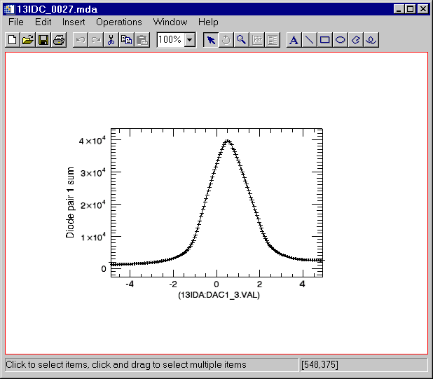
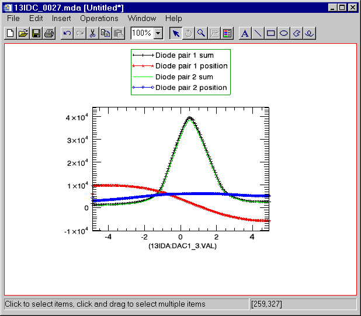
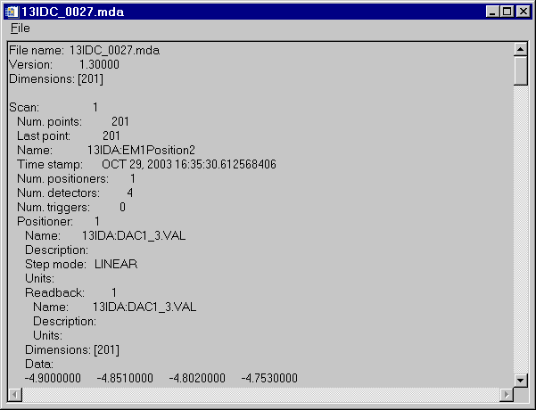
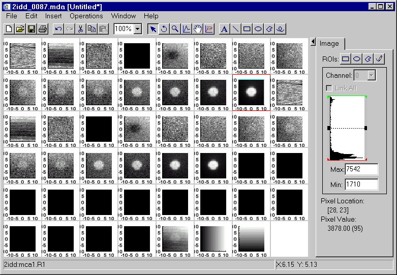
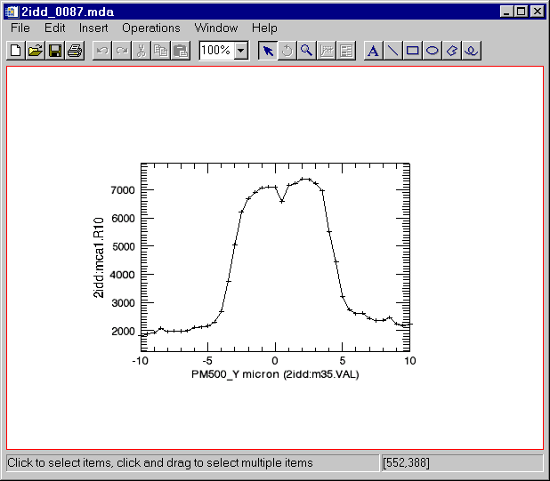
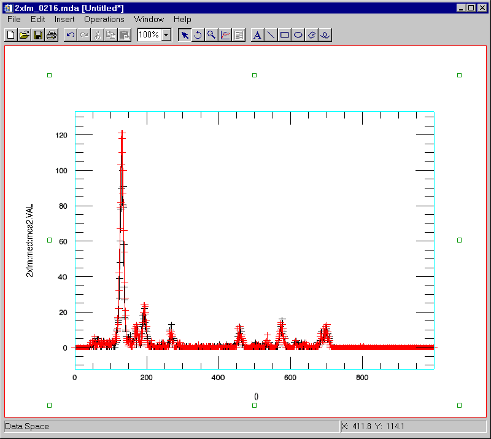
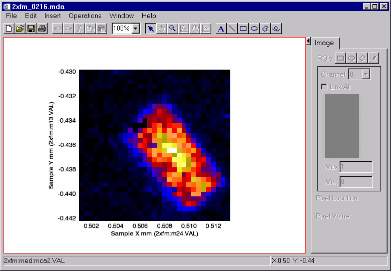
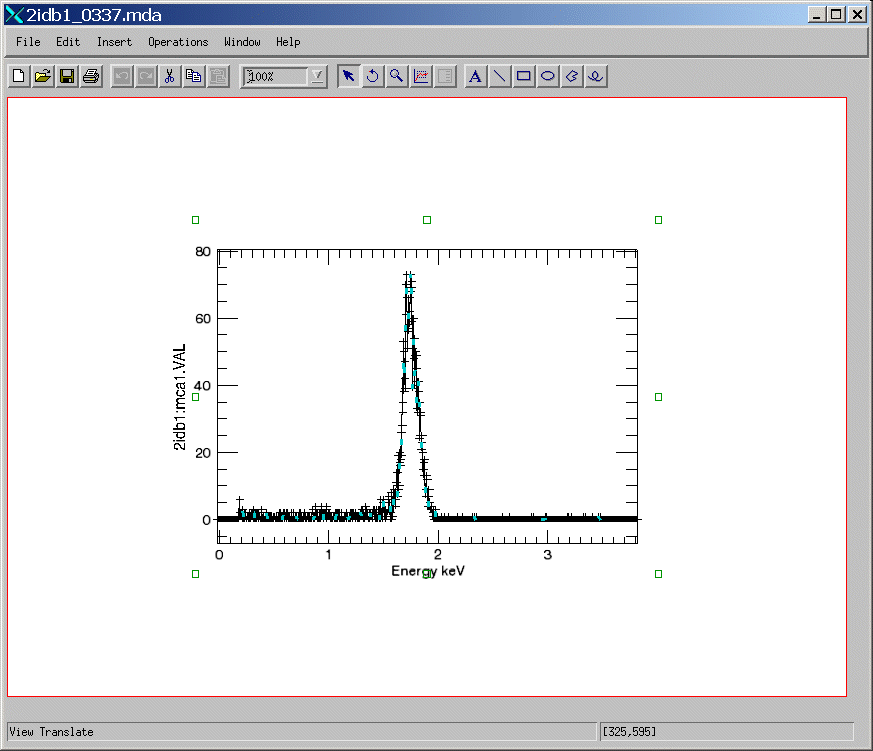

The EPICS_SSCAN class is designed to do the following:
The EPICS_SSCAN class uses a command line interface to control it. The EPICS_SSCAN_DISPLAY class provides a GUI to select a scan, select detectors to plot, etc. That package can be used without an IDL license, using the free IDL Virtual Machine. EPICS_SSCAN_DISPLAY is designed to enhance and/or replace the existing scanSee IDL tools developed by Ben-Chin Cha. These older tools are based on IDL's direct graphics system. Much of the visualization functionality written in scanSee is now included in the new iTools system in a more unified, object-oriented framework. For off-line data viewing and preparation of publication-quality plots it is clear that the iTools are superior. However, it remains to be seen whether the performance of the iTools system will be sufficient for on-line data viewing as a scan is being collected.
To use the IDL command line, or to enhance the functionality of EPICS_SSCAN, it is necessary to have an IDL license.
All of these IDL routines and sample MDA data files are available in a compressed tar file.
Note that the display routines require the iTools system in IDL, which is only available in IDL 6.0 and newer releases.
Detailed documentation for each routine can be found in the EPICS_SSCAN Class Reference.
The EPICS scan records provide a very powerful tool for scanning any set of "positioners" and reading any set of "detectors". Multi-dimensional scans are easily performed.
The saveData system in synApps provides a robust tool to automatically save every scan as it is performed without any need for user interaction. saveData saves files in a format called "MDA", which is a portable binary format based upon the standard XDR (External Data Representation) data representation. saveData saves each complete scan (which may be multi-dimensional) in a separate MDA file.
IDL 6.0 introduced a powerful object-oriented graphics system called iTools. This system provides IDL with an easy-to-use system for interactively visualizing data, customizing graphics, and producing publication quality output. With iTools users can add annotation, change axis format, pan/scroll/zoom through the data, get statistics, and save the results for future work. NOTE: The iTools are written in IDL, which means that they can be modified and/or extended by sub-classing their objects. This does affect their performance however, and it is best to run the iTools system on a 1GHz or faster computer.
The EPICS_SSCAN class was developed to provide a clean, object-oriented interface for reading MDA files, and getting the scan data into the IDL iTools system.
The initial implementation of EPICS_SSCAN only reads MDA files. Future enhancements may add a channel-access interface for reading scans from the IOC directly. Additional file readers (e.g. Nexus) may be added.
The following examples use these sample MDA data files that are provided in the tar file listed above.
13IDC_0027.mda : A 1-D scan (22 KB) with:
Inner scan: 201 points, 1 positioner, 4 detectors
2idd_0087.mda : A 2-D scan (410 KB) with:
Outer scan: 41 points, 1 positioner, 8 detectors
Inner scan: 41 points, 1 positioner, 47 detectors
2xfm_0216.mda A 3-D scan (11,910 KB) with
Outer scan: 31 points, 1 positioner, 10 detectors
Middle scan: 31 points, 1 positioner, 80 detectors
Inner scan: 1000 points, no positioners, 3 detectors
Read the 1-D dataset
IDL> s = read_mda('13IDC_0027.mda')
Display the first detector.
IDL> s->display
This produces the following plot:

Now display all of the detectors on a single plot. (The legend was added manually by clicking in the dataspace and using Insert/Legend from the menu).
IDL> s->display, /all

Look at the data in ASCII:
IDL> s->print, /all

Read the 2-D dataset
IDL> s=read_mda('2idd_0087.mda')
Display all of the images in a grid. Note, this takes a minute or so, depending on computer speed, because it is displaying 47 images in the iImage tool.
IDL> s->display, /all, /grid

Plot a profile of column 20 (X=20) in detector 15.
IDL> s->display, detector=15, xrange=20

Get the data for that column into IDL so we can perform calculations on it:
IDL> status = s->getData(p, d, detector=15, xrange=20) IDL> positionData = *p.pData IDL> detectorData = *d.pData IDL> print, positionData -10.000000 -9.5000000 -9.0000000 -8.5000000 -8.0000000 -7.5000000 -7.0000000 -6.5000000 -6.0000000 -5.5000000 -5.0000000 -4.5000000 -4.0000000 -3.5000000 -3.0000000 -2.5000000 -2.0000000 -1.5000000 -1.0000000 -0.50000000 0.00000000 0.50000000 1.0000000 1.5000000 2.0000000 2.5000000 3.0000000 3.5000000 4.0000000 4.5000000 5.0000000 5.5000000 6.0000000 6.5000000 7.0000000 7.5000000 8.0000000 8.5000000 9.0000000 9.5000000 10.000000 IDL> print, detectorData 1812.00 1877.00 1932.00 2076.00 1970.00 1998.00 1974.00 2005.00 2102.00 2128.00 2161.00 2309.00 2682.00 3750.00 5035.00 6192.00 6689.00 6895.00 7062.00 7088.00 7080.00 6583.00 7148.00 7220.00 7372.00 7365.00 7221.00 6950.00 5528.00 4442.00 3217.00 2737.00 2606.00 2614.00 2439.00 2351.00 2361.00 2465.00 2231.00 2183.00 2232.00
Read the 3-D data file. The inner scan for that file is the scanH record, and the 3 detectors are the spectra from 3 MCA records.
IDL> s->read_mda, '2xfm_0216.mda'
Display the spectrum for detector 2 at point [20,10] in black
IDL> s->display, zrange=10, yrange=20, detector=2
Overplot the spectrum for point [20,11] in red
IDL> s->display, zrange=11, yrange=20, detector=2, /overplot, color=[255,0,0]

Note that in the above spectra there is a peak between channels 250 and 300 that has different intensities at these two pixels. Display an image of the intensity in that peak. Use the XRANGE=[250,300] keyword to select those channels, and the /XTOTAL keyword to sum the counts in that channel range. This reduces the data from 3-D to 2-D.
Load the "Standard gamma" color table, and read the color values into r, g and b.
IDL> loadct, 5
IDL> tvlct, r, g, b, /get
Display the image of the total counts in channels 250 to 300 using this color table
IDL> s->display, detector=2, xrange=[250,300], /xtotal, rgb_table=[[r],[g],[b]]

It is easy to extend the EPICS_SSCAN functionality using class inheritance in IDL. This might be done because there is additional structure or information in the MDA file that the general interface cannot display or extract. Many groups that are using saveData to save MDA files are saving "meta-data" about the scan and the EPICS environment in the ExtraPVs in the MDA file.
As an example, the 2-ID-B station at the APS does scanning where the inner-most scan consists of MCA data collected using the getArrays mode. A difficulty arises because there is no positioner associated with this scan, so the EPICS_SSCAN::DISPLAY routine cannot display calibrated units for the spectra. The necessary calibration information is, however, stored in ExtraPVs for the MDA files collected at this station. One solution to the problem is to make a new class EPICS_SSCAN_2IDB, which is derived from EPICS_SSCAN. Here is the source code for the derived class:
pro epics_sscan_2idb::read_mda, filename
; Call the base class method
self->epics_sscan::read_mda, filename
; Is this a 2idb fly scan where the first detector in the innermost scan is an MCA, and there is
; no positioner?
sh = (*self.fileHeader.pScanHeader)[self.fileHeader.rank-1]
if (sh.numPositioners ne 0) then return
d = *sh.pDetectors[0]
if (strpos(d.name, 'mca') eq -1) then return
; Get the energy calibration coefficients. For now we hard-code what extra PVs hold this, but we
; could easily search through all of the extraPVs for the .CALO, .CALS and .CALQ fields for this
; MCA.
offset = *(*self.fileHeader.pExtraPVs)[68].pValue
slope = *(*self.fileHeader.pExtraPVs)[69].pValue
quad = *(*self.fileHeader.pExtraPVs)[70].pValue
energy = findgen(sh.npts)
energy = offset + slope*energy + quad*energy^2
p = {epics_sscanPositioner}
p.description = 'Energy'
p.units = 'keV'
p.pData = ptr_new(energy)
(*self.fileHeader.pScanHeader)[self.fileHeader.rank-1].numPositioners=1
(*self.fileHeader.pScanHeader)[self.fileHeader.rank-1].pPositioners[0] = ptr_new(p)
end
pro epics_sscan_2idb__define
c = {epics_sscan_2idb, inherits epics_sscan}
end
Here's the result. Note that the X-axis has the correct title and scale, which it would not have if the EPICS_SSCAN class were used.
IDL> s = obj_new('epics_sscan_2idb')
IDL> s->read_mda, '2idb1_0337.mda'
IDL> s->display, zrange=80, yrange=80
